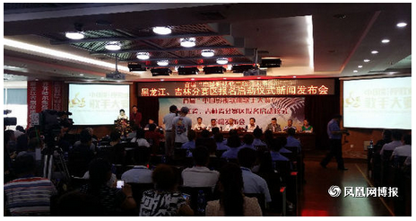

2015年8月19日，首届“中国影视歌曲歌手大赛”黑龙江省、吉林省赛区报名启动仪式暨新闻发布会在黑龙江省图书馆成功举行。
本次活动由中国电影报社、中国台港电影研究会、中国微电影大典组委会、亚洲影视联合会、地中金文化艺术传媒有限公司联合主办。
首届“中国影视歌曲歌手大赛”是集文化、娱乐、艺术、影视、交流为一体的主题性文化赛事活动。主题鲜明，立意新颖，意在以“全民参与”海选的形式，唱响中国，旨在通过以参赛选手演唱中国新老影视歌曲的艺术形式和文化氛围，来烘托主题。宣传“中国影视”文化的发展历史，讴歌伟大祖国的波澜壮阔，弘扬中国精神、中国力量，鼓舞斗志、铭记历史、传承文化。同时，为广大音乐爱好者，和深藏在民间的艺术人才，提供一个展示自我的平台，提供一次音乐创作的机会，让他们通过海选，走向艺术的殿堂，尽显风采，体现人生价值，提高生活品质，为我国影视事业的发展做出更大的贡献。
首届“中国影视歌曲歌手大赛”将通过电视、网络、平面等新闻媒体进行宣传报道。大赛将本着“公开、公平、公正”的原则，通过层层选拔挖掘大众喜爱的优秀歌手，为中国影视文化艺术的发展培养和输送人才。
本次新闻发布会由黑龙江省电视台著名主持人马万祺、雨辰主持，黑龙江省省委党史研究学会主任李景文、黑龙江省委宣传部文艺处黄处长、黑龙江省文化厅文艺处处长费守疆、黑龙江省文联电视家协会秘书长郭申、黑龙江省委宣传部《奋斗》杂志社总编刘富臣、哈尔滨市市委宣传部文艺处处长王丽、哈尔滨电视台综合部主任编辑刘晓光、哈尔滨市文联主席高弟、中国广告最高奖项“黄河奖”得主、《中国好声音》、《出彩中国人》东北地区总导演韩秋实等200余名包括企业家、著名艺术家、书画家、公益慈善家出席。
发布会上，黑龙江省委党史研究学会主任李景文致开幕词，哈尔滨电视台综合部主任编辑刘晓光、首届“中国影视歌曲歌手大赛”组委会执行秘书长刘焕喜、北京金酷莱信息有限公司总裁于淼、吉林省赛区组委会主任徐继达、哈尔滨国际影视艺术学院院长高国忠致辞发言。
黑龙江省作为全国首届“中国影视歌曲歌手大赛”海选的赛区，有着她独特的韵味。黑龙江是音乐之都、文化之都也是东北老工业基地，本次“中国影视歌曲歌手大赛“也是打造黑龙江城市靓丽名片的最好机遇，让全国、全世界了解黑龙江、认识黑龙江，让文化拉动经济，助力黑龙江省文化事业发展，创造黑土地上的神奇。
政府支持，社会参与，全民知晓，百姓文化。让荧屏闪烁，历史再现，让青春永驻，让中国精神，中国力量、中国色彩、中国符号成为演绎精彩人生、诠释光荣使命的一种动力，推动中国影视文化事业走向更加美好的明天，放歌中国，点亮世界。
上一篇：参赛须知
下一篇：影视歌曲唱的是你我，爱的是家国!